Methods
Five complete econometric workflows used in top-tier energy, finance, and environmental econometrics journals — under one consistent Python API.
1 Bivariate QQR
Sim & Zhou (2015), Journal of Banking & Finance
Local linear quantile regression with Gaussian kernel weights
$w_t=K\bigl((F_n(x_t)-\tau)/h\bigr)$ — the foundational
qq_regression().
2 Additive m-QQR (Type 1)
Alola, Özkan & Usman (2023), Energy Economics
Multivariate extension with one quantile axis per regressor
and no interaction terms — produces n side-by-side
3-D surfaces via additive_mqq_regression().
3 Moderated m-QQR (Type 2)
Sinha et al. (2023), Energy Economics
One main effect plus moderators entering through
$x\cdot Z_j$ interactions, captured by quantile-varying
$\gamma_j(\theta,\tau)$ via mqq_regression().
4 QQ Granger causality
Troster (2018), Econometric Reviews
Paired-bootstrap quantile causality test over the full
$(\theta,\tau)$ grid — visualised as a red-yellow-black
heat-map with significance stars via
qq_causality().
5 Conditional m-QQ causality
Sinha et al. (2024), Risk Analysis
Multivariate version of the test, controlling for an
arbitrary set of moderators (with or without
$x\cdot Z$ interactions). Function:
mqq_causality().
🎨 MATLAB visuals
Bundled colour-maps + journal style
MATLAB Jet, Parula, Turbo, Blue-Red diverging and the Sinha red-yellow-black palette — rendered at 300 dpi with serif fonts, ready for Elsevier / Springer submissions.
Theory & specifications
The package implements the canonical Sim & Zhou (2015) bivariate QQR plus both distinct multivariate specifications found in the literature. They are not equivalent — they answer different questions, and we summarise the mathematical differences below.
Bivariate QQR — Sim & Zhou (2015)
For each $(\theta,\tau)\in(0,1)^2$, the local linear quantile regression is
$$y_t \;=\; \beta_0(\theta,\tau)\;+\;\beta_1(\theta,\tau)\bigl(x_t-x^{\tau}\bigr)\;+\;\alpha^{\theta}\,y_{t-1}\;+\;v_t^{\theta},$$solved as a weighted $\theta$-quantile regression with Gaussian kernel weights based on the empirical-CDF distance of $x_t$ from its $\tau$-quantile:
$$w_t \;=\; K\!\left(\frac{F_n(x_t)-\tau}{h}\right),\quad K(u)=\frac{1}{\sqrt{2\pi}}e^{-u^2/2}.$$The slope $\beta_1(\theta,\tau)$ measures how the $\tau$-quantile of $x$ affects the $\theta$-quantile of $y$. Sim & Zhou recommend the plug-in bandwidth $h=0.05$.
Type 1 — Additive m-QQR (Alola, Özkan & Usman, 2023)
For $n$ regressors $(x_1,\ldots,x_n)$ the additive specification assigns each regressor its own quantile $\Phi_i$:
$$y_t \;=\; \beta_0(\theta,\Phi_1,\ldots,\Phi_n)\;+\;\sum_{i=1}^{n}\beta_i(\theta,\Phi_i)\bigl(x_{i,t}-x_i^{\Phi_i}\bigr)\;+\;\alpha^{\theta}\,y_{t-1}\;+\;\epsilon_t^{\theta}.$$For each focal regressor $x_i$ and each cell $(\theta,\Phi)$:
- Compute Gaussian kernel weights local in $x_i$ at quantile $\Phi$.
- Build a design matrix with all regressors centred at their own $\Phi$-quantile.
- Solve the weighted $\theta$-quantile regression and extract the slope on $x_i$.
The output is $n$ separate 3-D surfaces $\hat{\beta}_i(\theta,\Phi)$, plotted side-by-side (Alola 2023 Fig. 3 layout). Each surface reads as the partial effect of $x_i$ adjusted for the other regressors.
Type 2 — Moderated m-QQR (Sinha et al., 2023)
A single principal regressor $x$ with quantile $\tau$, plus exogenous moderators $Z_j$ entering both linearly and through interaction terms $x\cdot Z_j$:
$$y_t \;=\; \beta_0(\theta,\tau)\;+\;\beta_1(\theta,\tau)(x_t-x^{\tau})\;+\;\sum_{j=1}^{p}\!\bigl[\gamma_j(\theta,\tau)(x_t Z_{j,t}-x^{\tau}Z_j^{\tau}) + \alpha_j(\theta)(Z_{j,t}-Z_j^{\tau})\bigr]\;+\;\alpha^{\theta}y_{t-1}\;+\;\epsilon_t^{\theta}.$$The quantile-varying coefficient $\gamma_j(\theta,\tau)$ captures the moderating effect of $Z_j$. The output is one principal surface $\hat{\beta}_1(\theta,\tau)$ plus one moderation surface $\hat{\gamma}_j(\theta,\tau)$ per moderator.
When to use which
| You want to … | Use |
|---|---|
| Compare marginal effects of several regressors on $y$. | additive_mqq_regression() |
| Study how one main effect is moderated by other covariates. | mqq_regression() |
| Replicate Alola, Özkan & Usman (2023) / Özkan et al. (2023). | additive_mqq_regression() |
| Replicate Sinha et al. (2023) / Das et al. (2023). | mqq_regression() |
| Just one explanatory variable. | qq_regression() |
Quantile Granger causality
For each $(\theta,\tau)$ we test whether $x_{t-1}$ Granger-causes the $\theta$-quantile of $y_t$ using paired-bootstrap inference on the local weighted quantile-regression coefficient. The conditional (m-QQ) variant adds a set of moderator controls $Z$ — optionally with $x\cdot Z$ cross-terms — following the Sinha multivariate-quantile-causality framework.
Installation
Three install variants — pick the level of optional extras you want.
pip install mqqr # core: numpy, pandas, scipy, statsmodels, matplotlib
pip install mqqr[plotly] # + interactive HTML 3-D surfaces (plotly + kaleido)
pip install mqqr[full] # + seaborn, openpyxl, tabulate (richer tables / Excel)Editable install from source:
git clone https://github.com/merwanroudane/qqrpy.git
cd qqrpy
pip install -e .Dependencies
| Package | Min. version | Purpose |
|---|---|---|
numpy | 1.20 | array maths |
pandas | 1.3 | result frames & table export |
scipy | 1.7 | distributions, kernels, LP solver |
statsmodels | 0.13 | OLS / QR primitives |
matplotlib | 3.5 | 3-D surfaces, heat-maps, contours |
Quick start
All five workflows in < 40 lines of Python.
import numpy as np
from mqqr import (
qq_regression, mqq_regression, additive_mqq_regression,
qq_causality, mqq_causality,
plot_qq_3d, plot_mqq_panel, plot_additive_mqq_panel,
plot_qq_causality_heatmap,
)
# Synthetic example (see example_full.ipynb for real macro data)
rng = np.random.default_rng(2026)
n = 400
x = np.cumsum(rng.normal(0, 1, n)) / 10
epu = rng.normal(0, 1, n)
co2 = np.cumsum(rng.normal(0, 1, n)) / 12
y = -0.30 * x * (x < 0) + 0.15 * x * epu + rng.normal(0, 0.6, n)
# 1. Bivariate QQR
plot_qq_3d(qq_regression(y, x), cmap='jet')
# 2. Additive m-QQR (Alola Fig. 3 layout)
plot_additive_mqq_panel(
additive_mqq_regression(y, {'GF': x, 'EPU': epu, 'CO2': co2}),
cmap='jet',
)
# 3. Moderated m-QQR (Sinha multi-panel)
plot_mqq_panel(
mqq_regression(y, x, moderators={'EPU': epu, 'CO2': co2})
)
# 4 + 5. Quantile causality
plot_qq_causality_heatmap(qq_causality(x, y))
plot_qq_causality_heatmap(mqq_causality(x, y, {'EPU': epu, 'CO2': co2}))For a full tutorial on real US macroeconomic data, see
example_full.ipynb
— the notebook that generates every figure in the
gallery below and every table in the
tables section.
Visualisation gallery
Every figure below was produced by the
example_full.ipynb
notebook on real quarterly US macro data (1959 Q1 – 2009 Q3,
n = 202). MATLAB Jet colour-map at 300 dpi.
Data overview
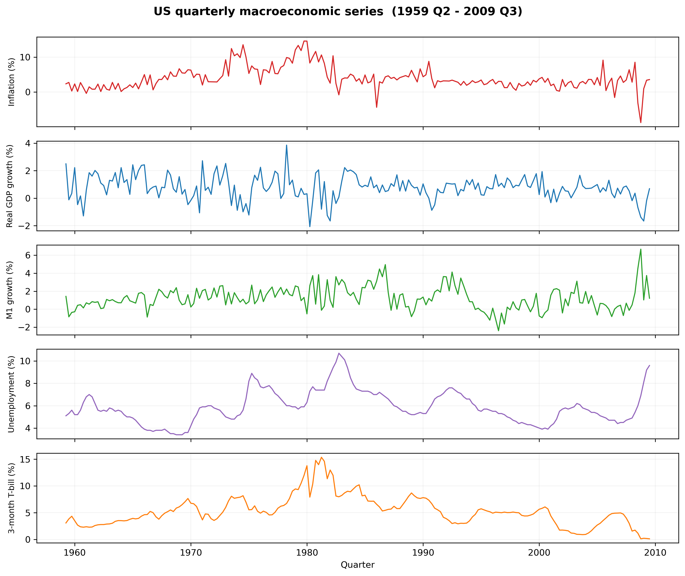
Bivariate QQR — UNEMP → INFL
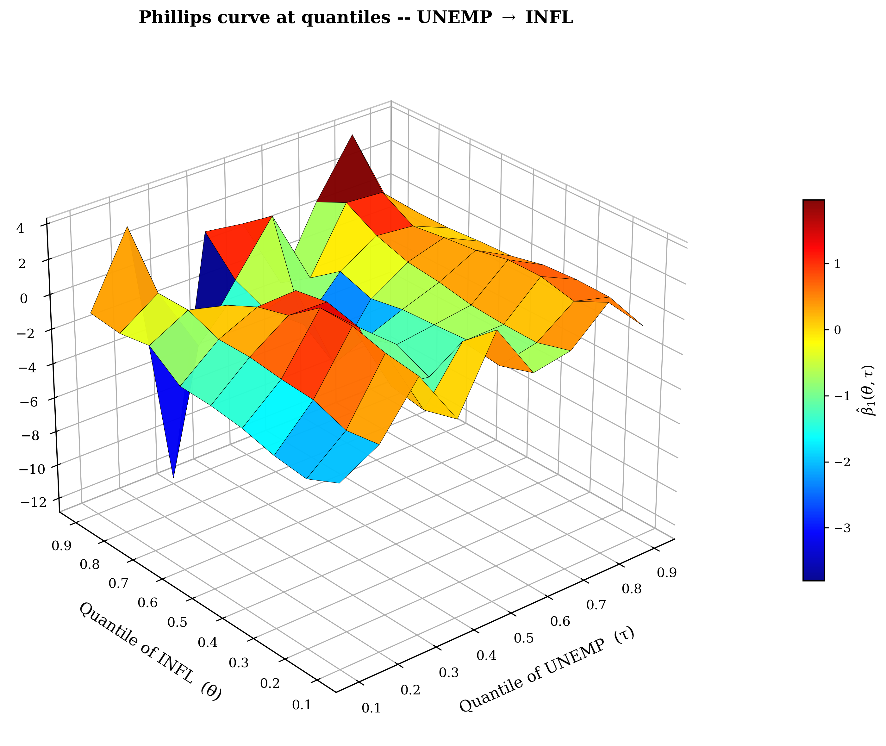
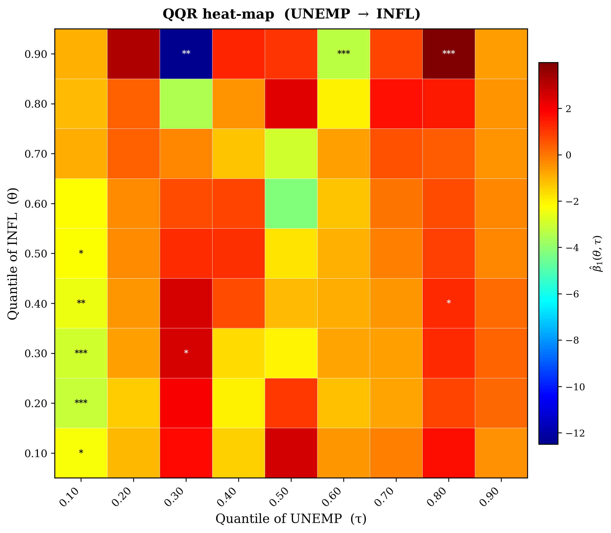
*/**/*** at 10%, 5%, 1%.
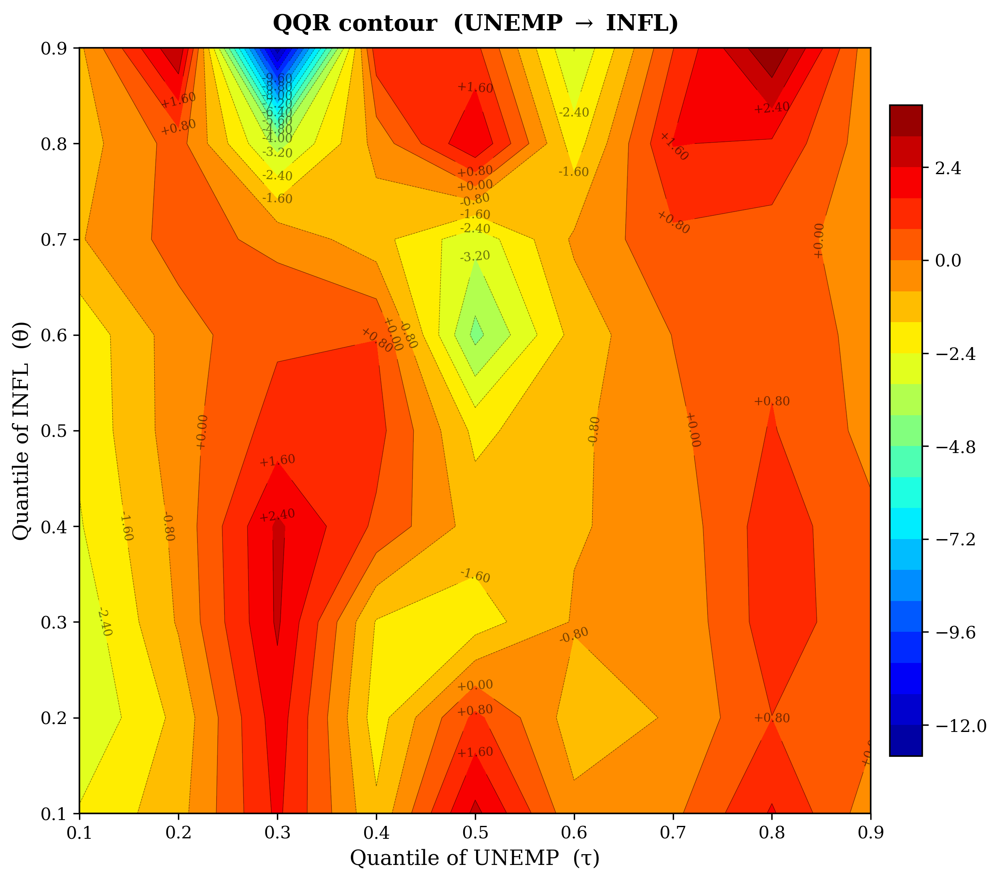
Additive m-QQR (Type 1) — three drivers of INFL
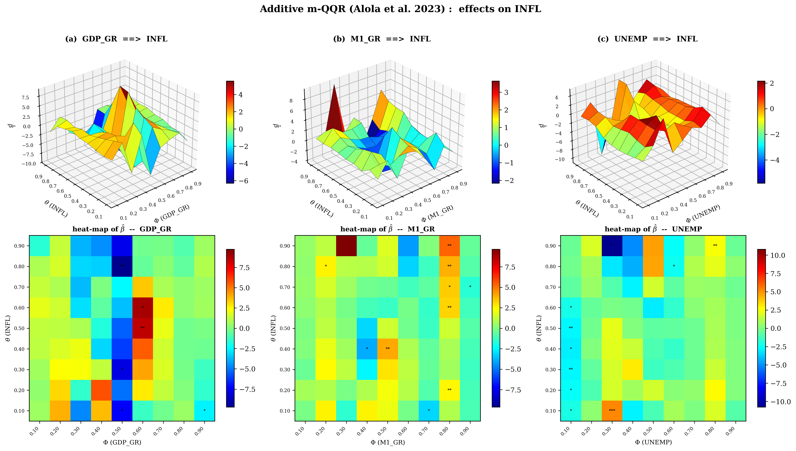
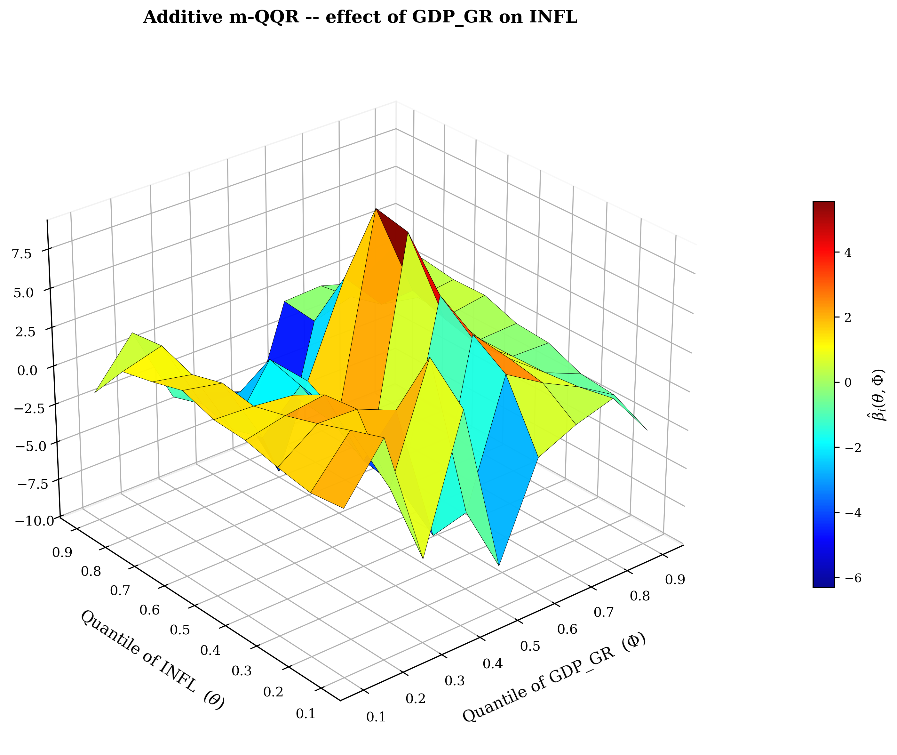
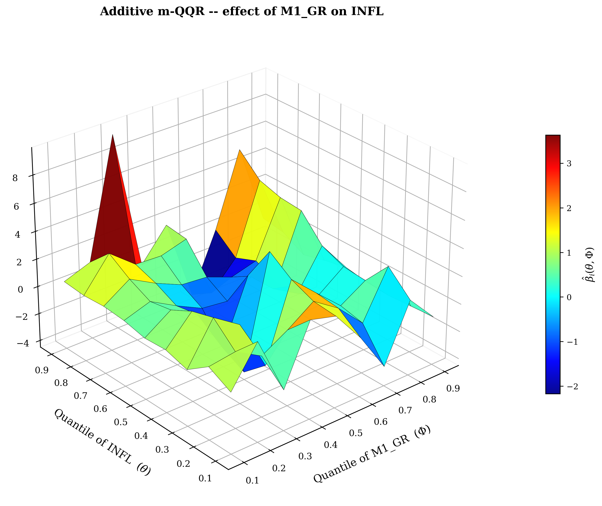
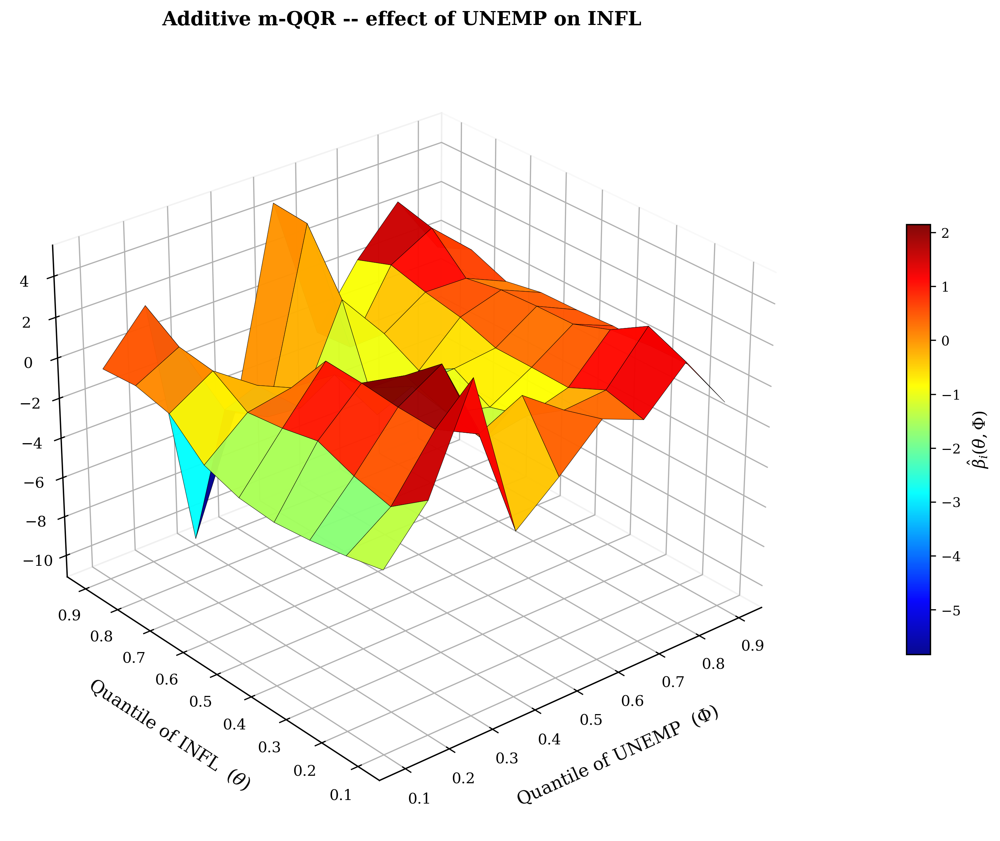
Moderated m-QQR (Type 2) — GDP_GR → INFL
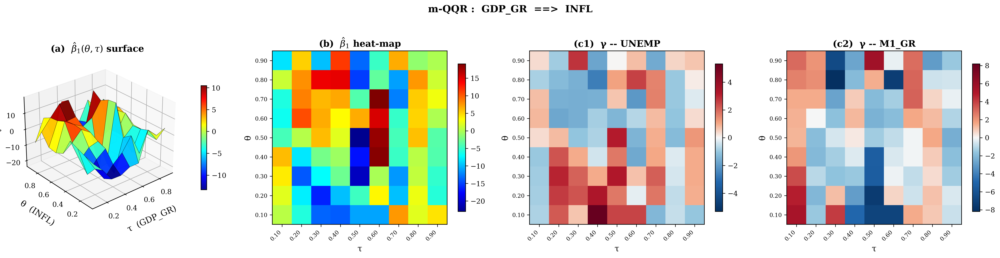
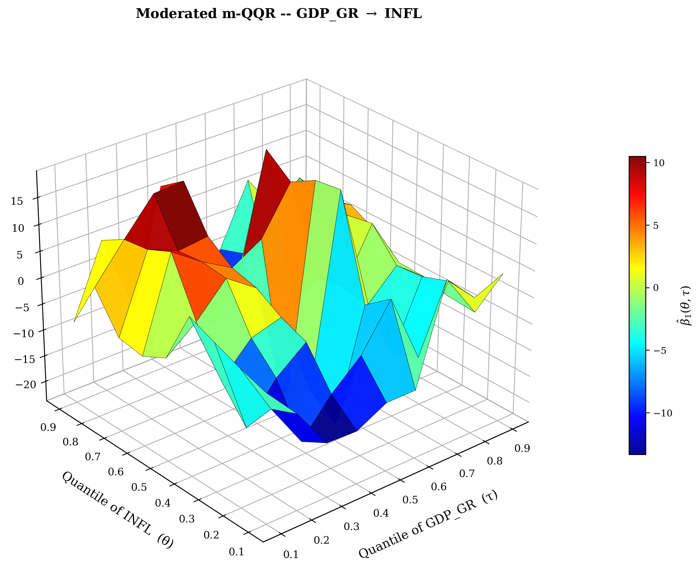
Quantile Granger causality
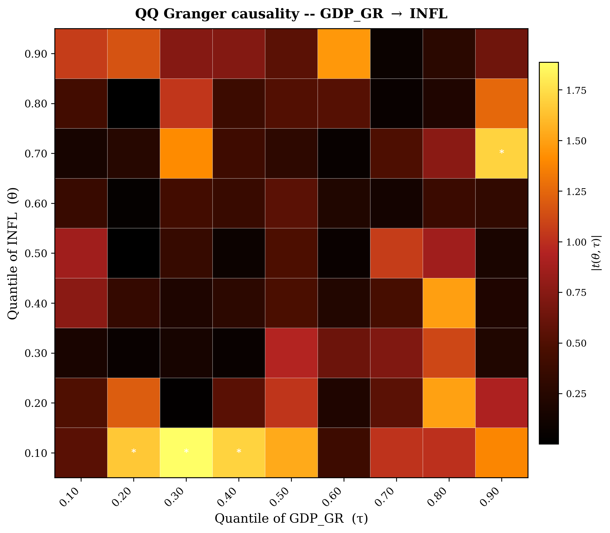
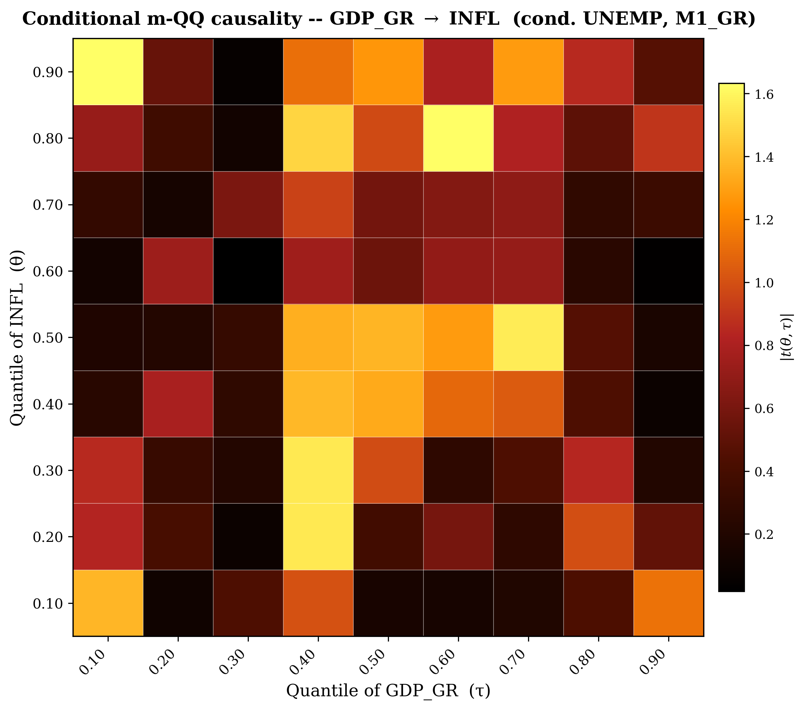
Bundled colour-maps
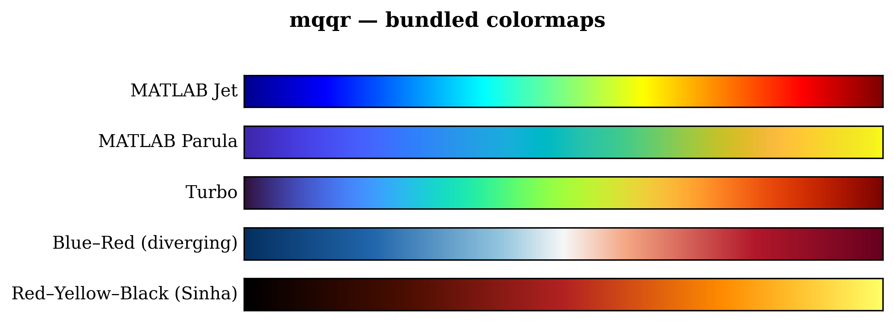
Journal-quality tables
All tables below were exported by the example notebook as Markdown, LaTeX and CSV (Elsevier / Springer-compatible). Each contains the standard $19\times 19$ grid of coefficients with significance stars.
| Table | Description | Formats |
|---|---|---|
| 1 | Descriptive statistics (mean, sd, skew, kurt, JB, ARCH-LM) | md · tex · csv |
| 2 | QQR slope $\hat{\beta}_1(\theta,\tau)$ — UNEMP $\to$ INFL | md · tex · csv |
| 3a | Additive m-QQR — GDP_GR $\to$ INFL | md · tex · csv |
| 3b | Additive m-QQR — M1_GR $\to$ INFL | md · tex · csv |
| 3c | Additive m-QQR — UNEMP $\to$ INFL | md · tex · csv |
| 4 | Moderated m-QQR principal slope $\hat{\beta}_1$ | md · tex · csv |
| 5a | Moderation $\hat{\gamma}$ — UNEMP | md · tex · csv |
| 5b | Moderation $\hat{\gamma}$ — M1_GR | md · tex · csv |
API reference
Estimators
| Function | Returns | Description |
|---|---|---|
qq_regression(y, x, …) |
QQResult |
Bivariate Sim & Zhou (2015) QQR. |
additive_mqq_regression(y, X, …) |
AdditiveMQQResult |
Type 1 — Alola/Özkan additive multivariate. |
mqq_regression(y, x, moderators, …) |
MQQResult |
Type 2 — Sinha moderation + interactions. |
qq_causality(x, y, …) |
QQCausalityResult |
Bivariate QQ Granger causality. |
mqq_causality(x, y, moderators, …) |
MQQCausalityResult |
Conditional (m-QQ) Granger causality. |
Plotting
| Function | Description |
|---|---|
plot_qq_3d | 3-D surface (MATLAB Jet). |
plot_qq_heatmap | 2-D heat-map with significance stars. |
plot_qq_contour | Filled contour with isolines. |
plot_mqq_3d | Sinha Type 2 principal 3-D surface. |
plot_mqq_heatmap | Sinha Type 2 principal heat-map. |
plot_mqq_panel | Sinha multi-panel (principal + $\gamma$). |
plot_additive_mqq_3d | One regressor surface from Type 1. |
plot_additive_mqq_heatmap | One regressor heat-map from Type 1. |
plot_additive_mqq_panel | Alola Fig. 3 side-by-side (n columns). |
plot_qq_causality_heatmap | |t|-statistics heat-map with stars. |
plot_qq_3d_plotly | Interactive HTML 3-D surface. |
Tables & colours
| Function / object | Description |
|---|---|
descriptive_table(data) | Mean / sd / skew / kurt / JB / ARCH-LM. |
results_table(result, …) | Pivot table with significance stars. |
to_latex(df, …) | Journal-ready LaTeX export. |
to_markdown(df, …) | Markdown export. |
MATLAB_JET, MATLAB_PARULA, TURBO, BLUE_RED, RED_YELLOW_BLACK | Bundled colormaps. |
show_colormaps() | Render colormap swatches. |
Citation
If mqqr supports your academic work, please
cite the methodology paper and the software.
@software{roudane_mqqr_2026,
author = {Merwan Roudane},
title = {{mqqr: Multivariate Quantile-on-Quantile Regression and Causality in Python}},
year = {2026},
version = {1.0.0},
publisher = {PyPI},
url = {https://github.com/merwanroudane/qqrpy}
}Methodology references
- Sim, N. & Zhou, H. (2015). Oil prices, US stock return, and the dependence between their quantiles. Journal of Banking & Finance, 55, 1–12.
- Alola, A.A., Özkan, O. & Usman, O. (2023). Examining crude oil price outlook amidst substitute energy price and household energy expenditure in the USA: A novel nonparametric multivariate QQR approach. Energy Economics, 120, 106613.
- Özkan, O., Haruna, R.A., Alola, A.A., Ghardallou, W. & Usman, O. (2023). Investigating energy-related environmental risks of economic complexity. Structural Change & Economic Dynamics, 65, 382–392.
- Sinha, A., Ghosh, V., Hussain, N., Nguyen, D.K. & Das, N. (2023). Green financing of renewable energy generation: capturing the role of exogenous moderation for ensuring sustainable development. Energy Economics, 126, 107021.
- Das, N., Gangopadhyay, P., Bera, P. & Hossain, M.E. (2023). Multivariate quantile-on-quantile regression and the Kaya identity: India. Environmental Science & Pollution Research, 30, 45796–45814.
- Troster, V. (2018). Testing for Granger-causality in quantiles. Econometric Reviews, 37(8), 850–866.
- Sinha, A. et al. (2024). Multivariate Quantile Causality. Risk Analysis (in press).